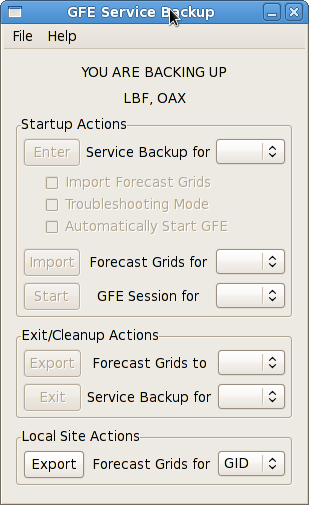
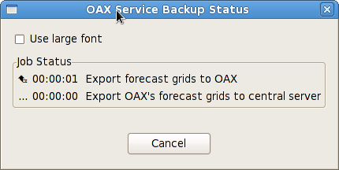
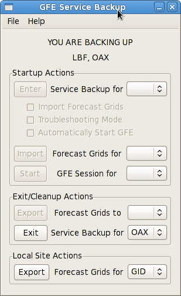

- Verify that the failed site is listed in the banner at the top of the Service Backup Dialog under
"YOU ARE CURRENTLY BACKING UP". If it isn't, you must first
enter service backup for the failed site.

- Select the failed site from the drop down next to the "Export Forecast Grids" button.
Only sites you are currently backing up will appear at the top of the list.
-
Click the "Export Forecast Grids" button to start the import.
- A
Service Backup Status Dialog
will open showing the status of each step required to export
the failed site's forecast grids.

- Verify that the failed site is listed in the banner at the top of the Service Backup Dialog under
"YOU ARE CURRENTLY BACKING UP". If it isn't, you must first
enter service backup for the failed site.
- Select the failed site from the drop down next to the "Exit Service Backup" button.
Only sites you are currently backing up will appear at the top of the list.

-
Click the "Exit Service Backup" button.
- A Confirm Exit Dialog will be displayed asking if you have contacted the failed site to
confirm they have receive their forecast grids. It is imperative that you do this prior to
exiting service backup or the grids may be lost.
If you have contacted the failed site and confirmed receipt of their forecast grids,
click Yes to exit service backup.
If not, click No and contact the failed site.
- A
Service Backup Status Dialog
will open showing the status of each step required to exit
service backup.